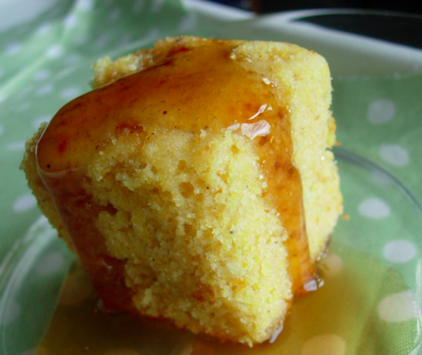

Golden-Sweet Cornbread

Description
This cornbread recipe is made from scratch with no mix. It's a real treat with chili, ribs, or barbecued chicken. You could even use this sweet, homemade cornbread to make stuffing for your Thanksgiving feast!
Serve with butter, jam, honey, or your favorite spread.
Ingredients
- Flour: This sweet cornbread recipe starts with a cup of all-purpose flour.
- Cornmeal: Opt for yellow cornmeal for this recipe, as it's sweeter than its white counterpart.
- Sugar: Use ⅔ cup white sugar for the perfect amount of sweetness.
- Baking powder: Baking powder acts as a leavener, which means it helps the cornbread rise.
- Salt: A teaspoon of salt enhances the flavors of the other ingredients.
- Milk: Use whole milk, 2% milk, or your favorite alternative milk to add moisture and help create the perfect batter consistency.
- Oil: A neutral oil, such as vegetable oil, keeps the cornbread nice and moist.
- Egg: One egg lends moisture and acts as a binding agent.
Steps